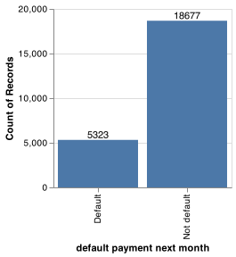
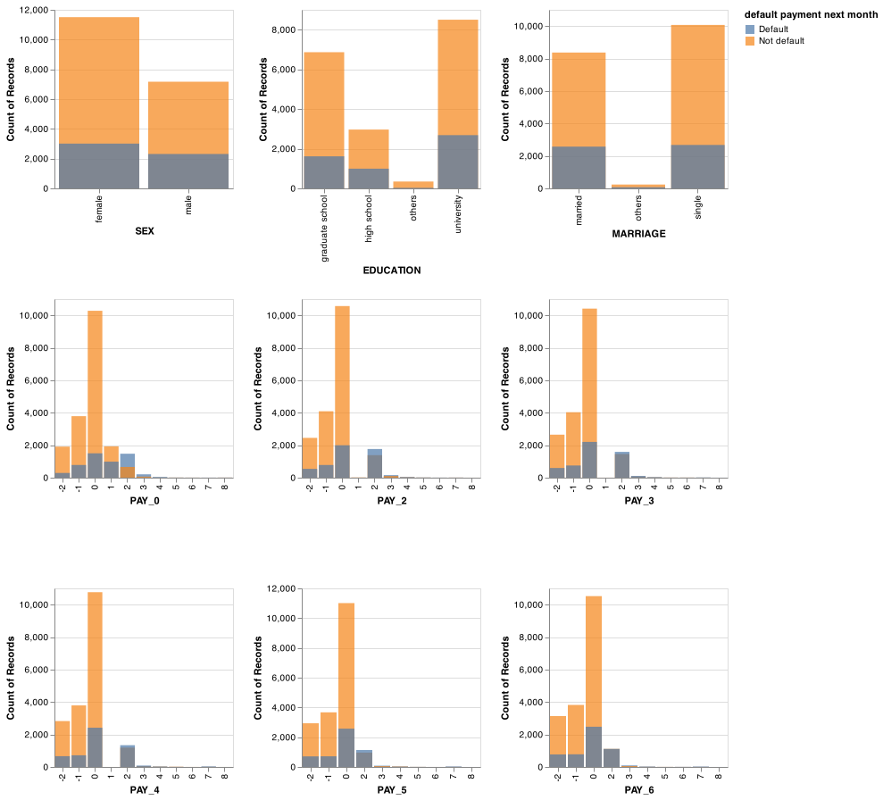
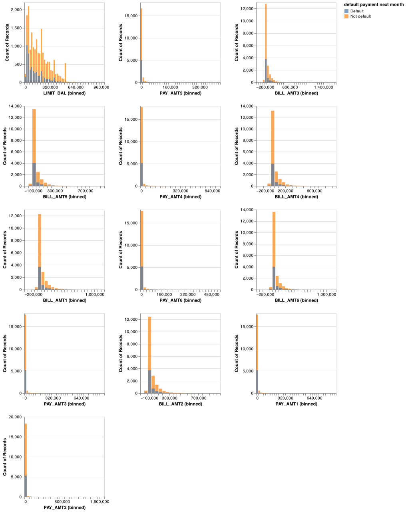

Introduction¶
Research Question¶
Credit cards are now an extremely common means of transaction that most of the adult consumers possess these days. It is therefore very important for the credit card issuing companies to be able to predict and work with the possibilities of their customers not being able to make their default payments. With this in mind, our research question that we aim to answer is: given characteristics (gender, education, age, marriage) and payment history of a customer, is he or she likely to default on the credit card payment next month?
Data¶
The data set that we used was put together by I-Cheng Yeh at the Department of Information Management, Chung Hua University, in Taiwan. The data set itself was sourced from the UCI Machine Learning Repository and can be found here. Each row in the data set represents variables associated with a customer and his or her credit card payment information, including a boolean value of default. There are 30,000 observations in the data set and 23 features. There are no observations with missing values or duplicated rows in the data set.
Initial EDA¶
Distribution of target variables¶
The first thing we spotted from the data was that there is a minor class imbalance. For instance our training data contained only 22.3% of class 1 in the target column. We decided to employ a few techniques to deal with this class imbalance during the analysis later.

Distribution of numeric and categorical features by target variable¶
To explore how each feature contributes to the prediction of the default class, we plotted the distribution of each numeric and categorical feature from the train data set and colored the distribution by class (default: blue and not default: orange). We see that the distributions below overlap for the two classes and they look quite similar to the human eye.

